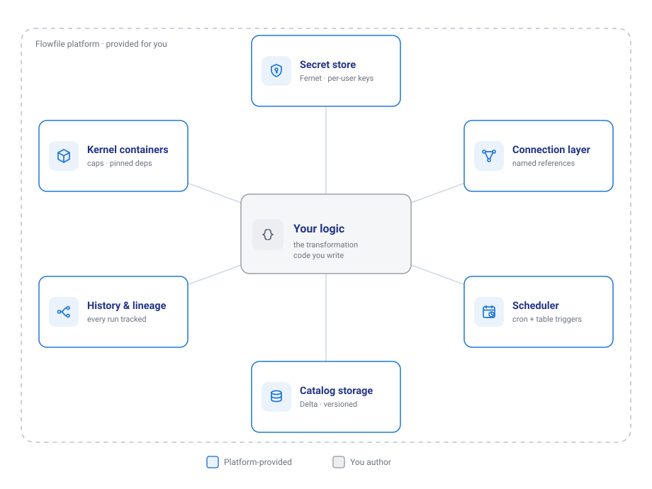

Flowfile, the technical version
The technical lens on What is Flowfile. Sending this to a non-technical colleague? Give them the plain-terms lens.
Flowfile bundles a visual flow editor, a data catalog, a scheduler, and a Polars-based Python API into one package. Every part has a standalone equivalent; what the bundle removes is the integration work between them. Below is what you no longer build or maintain, each with the mechanism behind it.

What it automates
Secret management. Credentials are stored once, encrypted at rest (Fernet with per-user key derivation), and referenced by name from both the UI and code. Flow files never contain secrets, so they can be committed and shared. In multi-user mode, secrets shared with a group are use-only: member flows execute with them, no one can read the values, and changing a shared connection's host/endpoint requires re-entering credentials.
Python environments. Kernels are Docker containers with CPU/memory limits, optional GPU passthrough, and a pinned package set. Everyone who runs the flow or opens the notebook executes against the same environment. User code accesses data through flowfile_ctx; raw credentials are not exposed to it.
Source connections. Named connections cover PostgreSQL/MySQL/SQLite/DuckDB/SQL Server/Denodo, S3/ADLS/GCS (CSV, Parquet, JSON, Delta, Iceberg), Kafka, REST endpoints, and GA4. The database reader accepts a query, so filtering and pre-aggregation can run at the source. Kafka consumption is incremental by consumer group: offsets commit only after a successful run, so a scheduled flow reads exactly the messages that arrived since its last successful run.
Data freshness. Cron schedules and table triggers are part of the catalog; the scheduler is embedded in the core service (a standalone mode exists). A table update triggers the flows watching it; set-triggers fire when all listed tables have updated. Dependent-pipeline execution is derived from trigger edges — there is no separate DAG definition to maintain.
Data organization. The catalog stores results as Delta tables with version history and time travel, organized in namespaces. Lineage is recorded in both directions: each table knows the flow that produced it and the flows that read it. Runs are recorded with per-node results and a snapshot of the flow version that executed.
Visualization. Any catalog table or SQL result opens in Graphic Walker; chart definitions are stored with the data. In notebook cells: flowfile_ctx.explore(lf).
Explaining what a pipeline does. Flows are graphs with labeled, describable nodes, whether built on the canvas or in code — ff.open_graph_in_editor(df.flow_graph) renders a code-built pipeline for anyone to inspect. Combined with run snapshots, "what produced this number" is answerable from the UI without the author present.
Standard engineering concerns
-
Reproducibility and CI. Flows are plain
.yaml.flowfile run flow <path> --param k=vexecutes one headlessly, exit code 0/1, no services required. Projects mirror flows, credential-free connections, and catalog metadata into a git repository automatically. The code examples in these docs are repository files executed by CI; this one writes to the catalog and queries it back:import flowfile as ff from flowfile_frame import read_catalog_sql SALES = "https://raw.githubusercontent.com/edwardvaneechoud/flowfile/main/data/templates/supermarket_sales.csv" income_by_city = ( ff.read_csv(SALES) .group_by("city") .agg(ff.col("gross_income").sum().alias("total_income")) ) ff.write_catalog_table( income_by_city, "docs_sales_by_city", schema=ff.default_schema(), write_mode="overwrite" ) top_cities = read_catalog_sql( "SELECT city, total_income FROM docs_sales_by_city ORDER BY total_income DESC" ) -
Performance. Polars end to end, lazy by default — pipelines are optimized as whole plans. In the server deployment, full-dataset compute runs in a separate worker service (spawned subprocesses own dataset memory), keeping the API process responsive.
- Lock-in. Bidirectional: code renders on the canvas, and flows export as Python — pure-transformation flows as Polars with no
flowfileimport (formula, fuzzy-match, and graph-solver nodes pull a lightweightpolars_*helper package instead), I/O-bearing flows with anffimport for connection resolution. Table data is Delta/Parquet on disk, readable by any tool. - Architecture. FastAPI core, separate compute worker, Docker kernels, embedded scheduler; a browser-only WASM build runs the editor with no backend. Details in Architecture and Catalog Architecture.
Design goal
The same one stated on the plain-terms page: every pipeline, table, and schedule is reproducible from its stored definition. The features above exist to make that hold without per-project effort.
Start here: pip install flowfile, run the tested first pipeline — or open the sales pipeline in your browser with nothing installed. Then take the Write Python route.